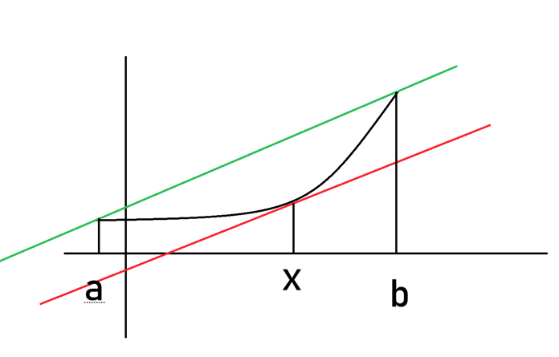
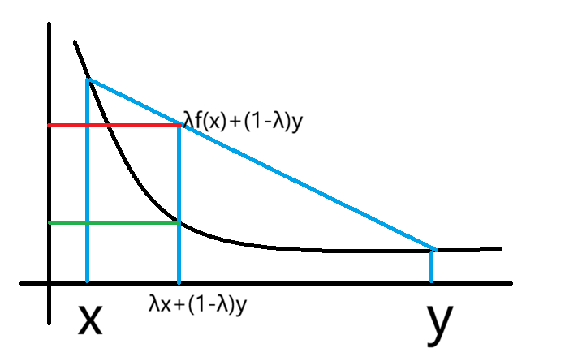
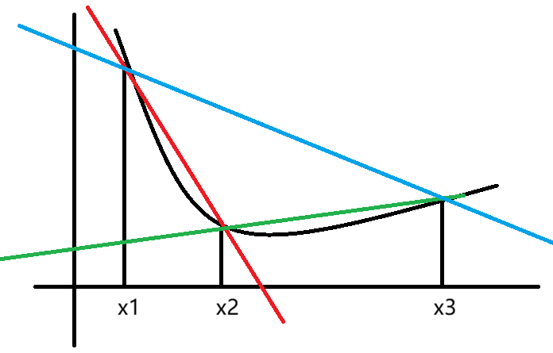
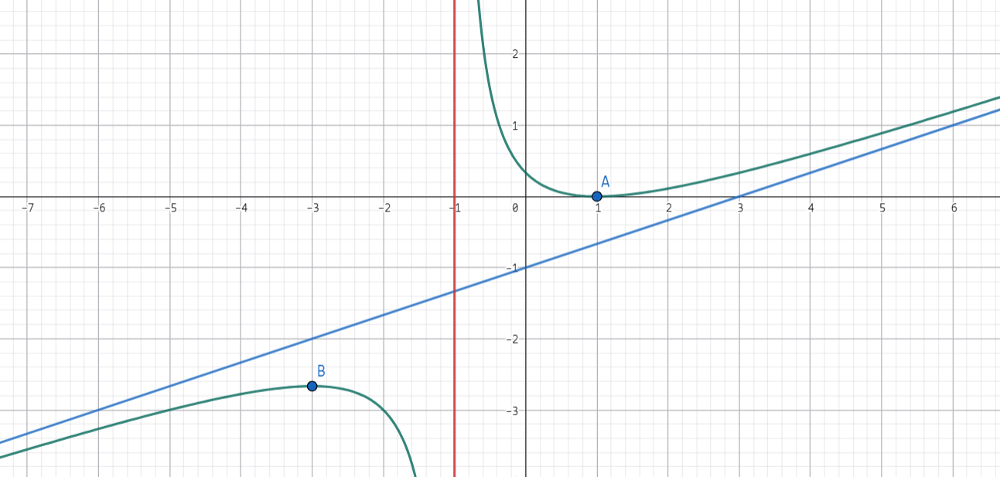

微分中值定理
定义 4.1 极值
假设 f 在开区间 (a,b) 上有定义，x0∈(a,b)。
如果存在 x0 的某个邻域 o(x0,δ) 内，使得 f(x)≤f(x0),x∈o(x0,δ)
则称 x0 为 f(x) 的一个极大值点，此时 f(x0) 称为 f(x) 的极大值。
类似的，可以定义极小值。
定理 4.1 Fermat 定理
如果 x0 为 f 的一个极值点，并且 f 在 x0 这一点是可导的。
则：这一点的导数一定是零
证明：
不妨认为其为极大值点，所以 ∃δ>0 s.t. when 0<∣x−x0∣<δ:f(x)≤f(x0)（保证在定义域内）
所以 x∈o(x0,δ) 时：
当 x>x0 时，x−x0f(x)−f(x0)≥0。
当 x<x0 时，x−x0f(x)−f(x0)≤0。
利用极限的保序性，这两个都取极限可以知道：
x→x0+limx−x0f(x)−f(x0)≥0;x→x0−limx−x0f(x)−f(x0)≤0。
换句话说 f(x) 在 x0 处的右导数大于等于零，左导数小于等于零
因为 f(x) 在 x0 处可导所以左右导数一定相等，等于 0。
证毕。
定理 4.2 Roll 中值定理
假设 f 在闭区间 [a,b] 上连续，从而一致连续。
在开区间 (a,b) 上是可导的且 f(a)=f(b)。
则存在一点 ξ∈(a,b) 使得 f′(ξ)=0
证明：
假设 f 在 [a,b] 上的最大最小值分别为 M,m（根据命题 2.16 闭区间上连续函数的最值性，一定可以取到）
-
M=m，f≡f(a)=f(b)，这样的 ξ 一定存在
-
M=m⇒m<M，则 m,M 中至少有一个 =f(a)。不妨认为是 M=f(a)。
所以 M>f(a)=f(b)
设 ξ 为 f 的最大值点，那么 ξ=a,ξ=b⇒ξ∈(a,b)。
因为开区间上，最大值点一定是极大值点，由 Fermat 定理可以说明：f′(ξ)=0
定理 4.3 Lagrange 中值定理
设 f 在 [a,b] 上连续，在 (a,b) 上可导，则 ∃ξ∈(a,b) s.t. f′(ξ)=b−af(b)−f(a)。

证明：
只需要证明：∃ξ∈(a,b) s.t. f(b)−f(a)=(b−a)f′(ξ)
构造函数 F(x)=f(b)−f(a)−(b−a)f(x)。
想用 Roll 证明（把这个图转一下转平就是 Roll 的形式）：
F(b)=f(b)−f(a)−(b−a)f(b)
F(a)=f(b)−f(a)−(b−a)f(a)
它们不等，没法使用 Roll 中值定理
为什么要用 Roll，其实就是想要 F′ 能构造出所需的项，这里 f′(x) 其实已经能造出来了，但前面还不行。
于是我们在 f(b)−f(a) 上再乘一个 x。
所以
F(b)=[f(b)−f(a)]x−(b−a)f(b)
F(a)=[f(b)−f(a)]x−(b−a)f(a)
F(a)=F(b) 且 F 在 (a,b) 上可导，[a,b] 上连续。
由 Roll 中值定理，∃ξ∈(a,b) s.t. F′(ξ)=0=f(b)−f(a)−(b−a)f′(ξ)。
所以就证明了 Lagrange 中值定理。
定理 4.4 Cauchy 中值定理
假设 f,g 在 [a,b] 连续，在 (a,b) 上可导。
g′(x)=0;∀x∈(a,b)。
则：∃ξ∈(a,b) s.t. g(b)−g(a)f(b)−f(a)=g′(ξ)f′(ξ)
证明：
用两次 Lagrange 中值定理就行吗？注意到这两个的 ξ 可能不等。
继续构造函数。
即证：∃ξ∈(a,b) s.t. [f(b)−f(a)]g′(ξ)=[g(b)−g(a)]f′(ξ)。
构造函数：F(x)=[f(b)−f(a)]g(x)−[g(b)−g(a)]f(x),x∈(a,b)。
F 在闭区间上连续，在开区间上可导。
还是想用 Roll，考虑 F(a),F(b)。
F(a)=f(b)g(a)−f(a)g(a)−g(b)f(a)+g(a)f(a)
F(b)=f(b)g(b)−f(a)g(b)−g(b)f(b)+g(a)f(b)
F(b)−F(a)=[f(b)−f(a)]⋅[g(b)−g(a)]−[g(b)−g(a)]⋅[f(b)−f(a)]=0
（这个轮换式看起来不等但实际上是等的，感觉还比较重要）
F(a)=F(b)，由 Roll 中值定理，∃ξ∈(a,b) s.t. F′(ξ)=0 即所证式。
命题 4.1
如果 f 在 [a,b] 上连续，在 (a,b) 上可导且 f′(x)=0,∀x∈(a,b) 则 f 为常数。
证明：
∀x∈[a,b]，考虑 [a,x]⊂[a,b]
由 Lagrange 中值定理：f(x)−f(a)=f′(ξ)(x−a)。
由于每一点都是 f′=0，所以 f(x)=f(a)。
恒等。
例题 4.1
证明 ∣sinx−siny∣≤∣x−y∣,∀x,y∈R
证明：
考虑函数：f(t)=sint,t∈[x,y]
由 Lagrange 中值定理：∃ξ∈[x,y] s.t. f(x)−f(y)=f′(ξ)(x−y)
所以就是 ∣cosξ∣⋅∣x−y∣≤∣x−y∣。
这是恒等式，证毕。
例题 4.2 又一个判定一致连续的方法
假设 f 在开区间上可导，且导数有界，且 ∃M>0 s.t. ∣f′(x)∣≤M.x∈(a,b)。
则 f 在开区间上是一致连续的，其中 a,b 可以为无穷。
证明：
任取 x<y∈(a,b)，所以 f(x) 在 [x,y] 上连续，在 (a,b) 上可导。
由 Lagrange 中值定理，存在 ξ∈[x,y] s.t. f(x)−f(y)=f′(ξ)(x−y)。
两边同时取绝对值：∣f(x)−f(y)∣=∣f′(ξ)∣∣x−y∣
所以：∣f(x)−f(y)∣≤M∣x−y∣。
所以 ∀ϵ>0, let δ=Mϵ, s.t. when ∣x−y∣<δ:∣f(x)−f(y)∣≤M∣x−y∣<ϵ
所以 f 是一致连续的。
函数的单调性和凸性
命题 4.2 单调性
设 f 在 I 上是可导的，则 f 在 I 上单调递增（减）的充分必要条件是其导数 f′(x)≥0(≤0)
证明，先推必要性 ⇒：
f 在 I 上是单调递增的，即 x−yf(x)−f(y)≥0,y=x⇒y−xf(y)−f(x)≥0。
固定 x, let y→x，所以 f′(x)>0。
证明充分性 ⇐：
下证，f 是单调递增的。
任取 x,y∈I,x>y。
下证：f(x)>f(y)。
由于 f 在 [y,x] 上连续且在 (y,x) 上可导，根据 Lagrange 中值定理：∃ξ∈(y,x) s.t. f(x)−f(y)=f′(ξ)(x−y)≥0。
证毕。
定义 4.2 凸性
假设 f 在区间 I 上有定义，对于 ∀x,y∈I,∀λ∈[0,1],f[λx+(1−λy)]≤λf(x)+(1−λ)f(y)，则称 f(x) 在 I 上是下凸的。
类似，可以定义上凸函数。
（称 λt+(1−λ)s 为 s,t 的凸组合）

这里用一下相似很容易画出图。
定理 4.5
假设 f 在区间 I 上二阶可导。
则 f 在 I 上是下凸的 ⟺ f′′≥0,∀x∈I
证明：⇒
假设 f 是下凸的，∀x∈I,∀Δx>0，只要 x+−Δx∈I，那么：
2f(x+Δx)+f(x−Δx)≥f(2x+Δx+x−Δx)=f(x)（λ=21）
所以 f(x+Δx)+f(x−Δx)≥2f(x)
所以 f(x+Δx)−f(x)≥f(x)−f(x−Δx)⋯(@)
为什么要这么做，因为二阶导大于零就是一阶导单调递增。
任取 x,y∈I，不妨设 x<y。
令 Δxn=ny−x 则 n→∞,Δxn→0
有 f(y)−f(y−Δxn)≥f(y−Δxn)−f(y−2Δxn)
（用了 @ 这个式子）
重复这样的操作可以得到：
f(y)−f(y−Δxn)≥f[y−(n−1)Δxn]−f(y−Δx)
所以 ≥f(x+Δxn)−f(x)
两边同除 Δxn：
Δxnf(y)−f(y−Δxn)≥Δxnf(x+Δxn)−f(x)
同时让 n→∞。
由于 f 可导，所以 f′(y)≥f′(x)。
所以 f′′≥0
证明 ⇐：假设 f′′≥0。
所以 f′ 在 I 上递增。
∀x,y∈I,x<y，再取 λ∈[0,1]。
令 t=λx+(1−λ)y
根据凸组合的性质，t∈[x,y]。
边界情况其实不用证所以就是 x<t<y。
所以 x−t=(1−λ)(x−y);y−t=λ(y−x)。
由 Lagrange 中值定理：
因为 f 在 [x,y] 上连续，且 (x,y) 上可导。
所以
{f(x)−f(t)=f′(ξ)(x−t)=f′(ξ)(1−λ)(x−y),f(y)−f(t)=f′(η)λ(y−x),ξ∈(x,t)η∈(t,y)
所以 f(x)=f(t)+f′(ξ)(1−λ)(x−y)。
由于 f′ 单调递增，所以 f(x)≥f′(t)(1−λ)(x−y)+f(t)⋯(1)
对于 y 同理：
f(y)≥f(t)+f′(t)λ(y−x)⋯(2)
两个式子做凸组合：
λf(x)+(1−λ)f(y)≥f(t)+f′(t)λ(1−λ)(x−y)+f′(t)λ(1−λ)(y−x)
定义 4.3 拐点
称 f 图像上，曲线上凸与下凸的分界点为 f 图像的拐点。
定理 4.6
设 f 在区间 I 上连续，(x0+δ,x0+δ)⊂I，其中 δ>0。
-
设 f 在 (x0−δ,x0),(x0,x0+δ) 上二阶可导，若 f′′(x) 在 (x0−δ,x0),(x0,x0+δ) 上符号相反，则 (x0,f(x0)) 是曲线 y=f(x) 的拐点。
-
若 f 在 (x0−δ,x0+δ) 二阶可导，且 (x0,f(x0)) 是 y=f(x) 的拐点，则 f′′(x)=0
证明：
例子：
(0, 0) 是 f(x)=x3 的拐点，不是 g(x)=x4 的拐点。
定理 4.7 Jenson 不等式
若 f 在区间 I 上是下凸的（或上凸）
则 ∀xk∈I 和满足 λ1+λ2+⋯+λn=1 的 λk>0,k=1,2,3,4,…n。
都有 f(k=1∑nλkxk)≤k=1∑nλkf(xk)。
上凸则改为 ≥
证明：
只考虑 f 是下凸的：
n=2 的时候显然成立。
假设 n=m>2 时不等式成立：
f(λ1x1+λ2x2+⋯+λnxn)≤λ1f(x1)+λ2f(x2)+⋯+λnf(xn)
其中 λk>0 且 ∑λk=1。
当 n=m+1 时
要证：k=1∑m+1λk=1 且 λk>0 时：
f(k=1∑m+1λkxk)≤k=1∑m+1λkf(xk)。
由于：k=1∑m+1λkxk=k−1∑mλk⋅k=1∑mk=1∑mλkλkxk+λm+1xm+1
记 μ=k=1∑mλk,x=k=1∑mμλkxk。
由于 μ+λm+1=1,μ>0,λm+1>0，由 f 下凸的定义：
f(k=1∑m+1λkxk)=f(μx+λm+1km+1)≤μf(x)+λm+1f(xm+1)
由 m 个数的归纳假设：
f(x)=f(k=1∑mμλkxk)。
记 μk=μλk。
那么f(x)=f(k=1∑m+1μkxk)≤k=1∑mμkf(xk)
所以 μf(x)≤k=1∑mλkf(xk)⇒k=1∑m+1f(λkxk)≤k=1∑m+1λkf(xk)
定理 4.8
设 f 在区间 I 上连续，则下列等价（T.F.A.E）
-
f 在 I 上是下凸的。
-
∀x,y∈I，有 f(2x+y)≤2f(x)+f(y)
-
∀x1,x2,…,xn,xn∈I，f(nx1+x2+…xn)≤nf(x1)+f(x2)+f(x3)+⋯+f(xn)
证明：1 推 2：
只需要在下凸函数的定义中取 λ=21。
2 推 3：
设 x1,x2,x3,x4∈I 有：
f(4x1+x2+x3+x4)=f(22x1+x2+2x3+x4)≤2f(2x1+x2)+f(2x3+x4)
继续用 (2)：
221[f(x1)+f(x2)]+21[f(x3)+f(x4)]=22f(x1)+f(x2)+f(x3)+f(x4)
一般的，可以知道 n=2k 都成立。
即:
f(2kx1+x2+⋯+x2k)≤2kf(x1)+f(x2)+⋯+f(x2k)
由于 ∀n∈N+,∃k∈N+ s.t. 2k≥n
令 an=nx1+x2+…xn
令 xn+1=xn+2=⋯=x2k=an，
所以 f(nx1+x2+⋯+xn)=f(an)=f[2knan+(2k−n)an]
=f(2kx1+x2+x3+…xn+xn+1+⋯+x2k)≤2k1[f(x1)+f(x2)+…f(xn)+f(xn+1)+⋯+f(x2k)]
=2k1[f(x1)+f(x2)+⋯+f(xn)+(2k−n)f(an)]
两边同乘 2k
⇒2kf(an)≤k=1∑nf(xk)+(2k−n)f(an)
⇒nf(an)≤k=1∑nf(xk)⇒f(nx1+x2+x3+…xn≤nf(x1)+f(x2)+⋯+f(xn))
证明 3 推 1
要整：∀λ∈(0,1);x,y∈I 有 f(λx+(1−λ)y)≤λf(x)+(1−λ)f(y)
先证明 λ∈Q 时是正确的：
设 λ=mn，其中 m>n,m,n∈N+。
那么 f(λx+(1−λ)y)=f(mnx+mm−ny)=f(mx+⋯+x+y+…y)
≤m1[nf(x)+(m−n)f(y)]=λf(x)+(1−λ)f(y)⋯(@)。
对于一般的 λ，则存在一列有理数 {λk}→λ(k→∞)。
由于 f 连续：f(λk)→f(λ)
由 @ 式：f(λkx+(1−λk)y)≤λkf(x)+(1−λk)f(y)。
两边 k→∞ 可以得到原式。
定理 4.9
假设 f 在区间 I 上有定义。
∀x1,x2,x3∈I 且 x1<x2<x3。
那么下列说法等价：
-
f 在 I 上是下凸的。
-
x2−x1f(x2)−f(x1)≤x3−x1f(x3)−f(x1)
-
x3−x1f(x3)−f(x1)≤x3−x2f(x3)−f(x2)
-
x2−x1f(x2)−f(x1)≤x3−x2f(x3)−f(x2)。

定理 4.10
假设 f 在区间 I 上可导，则 f 在区间 I 上是下凸的，当且仅当
y=f(x) 的函数图像的切线总是位于 y=f(x) 的下方
证明 ⇒：
要证明：∀x0∈I:f(x)>f(x0)+f′(x0)(x−x0)
任取 x∈I;x<x0。
取割线 AB:A(x0,f(x0)),B(x,f(x))。
kAB=x0−xf(x0)−f(x)<f′(x0)（切线是割线的极限）
所以 f(x)−f(x0)<f′(x0)(x−x0)，就证完了。
在另外一边 (x>x0) 也是一样的。
⇐：
已知 ∀f(x)>f(x0)+f′(x0)(x−x0)。
假设 ∃λ∈(0,1),x1,x2∈I s.t. λx1+(1−λ)x2=x0。
令 x=x1，带入已知条件：
f(x1)>f(x0)+f′(x0)(x1−x0)⟺f(x1)>f(x0)+f′(x0)(1−λ)(x1−x2)。
同理令 x=x2：
f(x2)>f(x0)+f′(x0)(x2−x0)⟺f(x2)>f(x0)+f′(x0)λ(x2−x1)
对一式二式做凸组合：
λf(x1)+(1−λ)f(x2)>f(x0)=f[λx1+(1−λ)x2]
证毕。
定理 4.11 导函数不存在第一类不连续点
设 f 在区间 (a,b) 上可导，那么，对于 (a,b) 中的每个点，定要么是 f′ 的连续点，要么是 f′ 的第二类不连续点。
证明：
任取 x0∈(a,b)，由导数的定义：f′(x0)=f+′(x0)=x→x0+limx−x0f(x)−f(x0)。
由于 f(x) 在 [x0,x] 上连续可导：由 Lagrange 中值定理：=x→x0+limx−x0f′(ξ)(x−x0),ξ∈(x0,x)。
然后上式 =x→x0+limf′(ξ)=ξ→x0+limf′(ξ)
如果极限 t→x0+limf′(t) 存在，那么 x→x0+limf′(x)=ξ→x0+limf′(ξ)=f′(x0)
同理，如果 t→x0−limf′(t) 存在也可以推出 t→x0−limf′(t)=f′(x0)
所以只要左右极限存在那它们一定相等且都等于函数值。
若至少有一个不存在那就是第二类不连续点。
定理 4.12 Darboux 定理（导函数介值性）
设 f 在闭区间 [a,b] 上可导，端点考虑单侧导数。
∀c∈(f′(a),f′(b))（不妨假设 f′(a)<f′(b)），∃ξ∈[a,b] s.t. f′(ξ)=c
证明：F(x)≡f(x)−cx,x∈[a,b]。
显然 F(x) 在 a,b 上也可导。
那么 F+′(a)=x→a+limx−aF(x)−F(a)=x→a+lim[x−af(x)−f(a)−c]=f+′(a)−c=f′(a)−c<0
同样可以知道 F−′(b)=f−′(b)−c=f′(b)−c>0。
所以：当 x 与 a 靠的足够近时，F(x)<F(a)；x 与 b 靠的足够近时，F(x)<F(b)。
所以 F 不在 a,b 两点取最小值。
注意到 f 在闭区间上可导 -> 连续 -> F 在 [a,b] 上连续。
所以 F 的最小值 F(ξ) 必然在 (a,b) 内取到。
且 F 在 [a,b] 上可导，由 Fermat 定理，F′(ξ)=0⟺f′(ξ)=c
应用
例 1
设 a>0，函数 f 在 [a,b] 上是连续的，在 (a,b) 上可导。
证明：∃ξ∈(a,b) s.t. a−baf(b)−bf(a)=f(ξ)−ξf′(ξ)
证明：
其实就是要证明：b1−a1bf(b)−af(a)=f(ξ)−ξf′(ξ)
取 F(x)=xf(x),G(x)=x1，显然他们在 [a,b] 上连续，(a,b) 上可导。
由 Cauchy 中值定理：
∃ξ∈(a,b) s.t. G(b)−G(a)F(b)−F(a)=G′(ξ)F′(ξ)
G′(ξ)F′(ξ)=−ξ21ξ2ξf′(ξ)−f(ξ)=f(ξ)−ξf′(ξ)。
这就是我们想要的。
例 2
设 f 在 [a,b] 上连续，(a,b) 上可导。
其中 0<a<b,f(a)=f(b)。
证明：∃ξ,η∈(a,b),f′(ξ)=2ηa+bf′(η)。
证明：（观察到 2η=(η2)′，但是想用中值定理需要类似 b2−a2 的形式，所以构造）
即证：(b−a)f′(ξ)=2ηb2−a2f′(η)
即：
2ηf′(ξ)=b−ab2−a2f′(η)
令 g(x)=x2,x∈[a,b]，先用 Cauchy 中值定理：
∃η∈(a,b) s.t. f(b)−f(a)g(b)−g(a)=f′(η)g′(η)=f′(η)2η=f(b)−f(a)b2−a2
对比一下式子，现在就只需要要证明：f(b)−f(a)b2−a2=f′(ξ)b+a
消掉 b+a:f(b)−f(a)b−a=f′(ξ)1。
再用一次 Lagrange 中值定理：∃ξ∈(a,b) s.t. f′(ξ)=b−af(b)−f(a)。
例 3
比较大小：eπ,πe。
取对数：πlne,elnπ
比较 π,elnπ 就行，然后除过去比较 lnππ,e⟺πlnπ,e1 就行。
可以构造函数 f(x)=xlnx。
f′(x)=x21−lnx。
当 x≥e 时，单调递减，所以 f(e)>f(π)
进而 πe>eπ
例 4
证明：x≥sinx≥x−61x3
其实 Taylor 展开就行。
当然也可以构造函数 f(x)=x−sinx,g(x)=sinx−x+6x3。
第一个求一次导就行。
第二个：求两次导就行。
例 5
证明 Young 不等式：
设 a,b≥0，正数 p,q s.t. p1+q1=1
ab<pap+qbq
其实只需要证明 a,b=0。
由于 q=p−1p=1+p−11。
所以等价于 ab≤pap+qb⋅bp−11⟺1≤pap−1b−1+qa−1bbp−11
令 x=a1bp−11⇒(x1)p−1=ap−1b−1。
要证的就是 1≤q1x+p1x1−p;x>0
构造函数：f(x)=qx+px1−p
求导：f′(x)=q1+p(1−p)x−p=q(1−x−p)
极值点是 x=1。
所以 f(x)>f(1)=1，证毕。
例 6 Jordan 不等式
设 x∈[0,2π]，则：
π2x≤sinx≤x
考虑函数 f(x)=xsinx,x∈(0,2π]
然后就转化成导函数的问题，比较简单这里省去不做说明。
L'Hospital 法则
定理 4.13 L'Hospital 法则
假设函数 f,g 在 (a,a+δ] 上可导，自然是连续的。
其中 δ>0,g′(x)=0,x∈(a,a+δ]。
如果 x→a+limf(x)=x→a+limg(x)=0
或者 x→a+limf(x)=x→a+limg(x)=∞。
且 x→a+limg′(x)f′(x) 存在。
则 x→a+limg(x)f(x)=x→a+limg′(x)f′(x)。
证明：
- 先考虑 00 型的情况，设 x→a+limg(x)f(x)=A∈R。
注意这个形式，想要使用 Cauchy 中值定理。
补充定义：f(a)=0,g(a)=0，故 f,g 在 [a,a+δ] 上连续，在 (a,a+δ) 上可导。
现在对 f,g 在 [a,a+δ] 上用 Cauchy 中值定理：
即 ∀x∈[a,a+δ],∃ξ∈(a,x) s.t. ,g(x)−g(a)f(x)−f(a)=g′(ξ)f′(ξ)
那么：
g(x)f(x)=g′(ξ)f′(ξ)⇒x→a+limg(x)f(x)=x→a+limg′(ξ)f′(ξ)=A
- 再考虑 ∞∞ 的情况。
现在的问题是 a 这个点没有定义不能类似上面的这种做法，但大体方向还是使用 Cauchy。
取一点 x0∈(a,a+δ)。
g(x)−g(x0)f(x)−f(x0).
我们想把这个式子写作 gf 的形式：
那么：g(x)−g(x0)f(x)−f(x0)=g(x)−g(x0)f(x)−g(x)−g(x0)f(x0)。
由于 x→a+limg(x)=∞。
所以当 x→a+ 时，g(x)−g(x0)f(x)−f(x0)=g(x)−g(x0)f(x)。
再做一个神奇小变换：
g(x)−g(x0)f(x)=g(x)f(x)⋅g(x)−g(x0)g(x)。
x→a+ 时 g(x)−g(x0)g(x)=1。
所以 x→a+limg(x)−g(x0)f(x)−f(x0)=x→a+limg(x)f(x)。
根据 Cauchy 中值定理：∀x∈[a,x0]∃ξ∈[a,x] s.t. g(x)−g(x0)f(x)−f(x0)=g′(ξ)f′(ξ)
然后就和上面一样了
这里用 ϵ−δ 语言来写一下：
g(x)f(x)=g(x)−g(x0)f(x)−f(x0)[1−g(x)g(x0)]+g(x)f(x0)
⇒∣g(x)f(x)−A∣=g(x)−g(x0)f(x)−f(x0)[1−g(x)g(x0)]+g(x)f(x0)−A
≤∣1−g(x)g(x0)∣⋅∣g(x)−g(x0)f(x)−f(x0)−A∣+∣g(x)f(x0)−Ag(x0)∣
由于 x→a+limg′(x)f′(x)=A。
故，∀ϵ>0,∃ρ<δ s.t. when 0<x−a<ρ:∣g′(x)f′(x)−A∣<ϵ
取 x0=a+ρ：
那么 ∀x∈[a,x0]，在 [a,x0] 上，使用 Cauchy 中值定理：
∃ξ∈[x,x0] s.t. g(x)−g(x0)f(x)−f(x0)=g′(ξ)f′(ξ)
所以 ∣g′(ξ)f′(ξ)∣<ϵ
由于 x→a+limg(x)=∞。
所以对上面的 ϵ>0,∃ s.t. when ˚0<x−a<r:∣g(x)f(x0)−Ag(x0)∣<ϵ
同时也存在 s>0 s.t. when 0<x−a<s 时，有 ∣g(x)g(x0)∣<1（任取 ϵ）
综上：
when 0<x−a<min{ρ,r,s}
有：
∣g(x)f(x)−A∣<2ϵ+ϵ=3ϵ。
所以 x→a+limg(x)f(x)=A。
注记：将 x→a+ 换成 x→a,x→a− 仍旧成立。
注记：如果要计算 x→∞limg(x)f(x)，只需要令 t=x1，t→0limg(t1)f(t1) 再用洛必达法则。
注记：L'Hospital 只适用于 00,∞∞
例题 4.3
计算：x→0limx3x−sinx
=x→0lim3x21−cosx=x→0lim6xsinx=61
当然第一步导完之后直接用等价无穷小量代换也行。
例题 4.4
求 x→0lim(2ax+bx)x1
设其 =A。
那么 lnA=x→0limxln[(ax+bx)/2]
洛就行了。
例题 4.5
求 x→0+limxx
一样的根据 ln 的连续性先求一下对数然后拿出来：
设极限为 A：
则 lnA=x→0+lim(xlnx)
然后发现这个地方不知道怎么算了，单纯用极限运算法则的话会因为 lnx→−∞ 而无法使用。
所以考虑洛必达法则，问题在于没有形式，所以构造一个：
xlnx=x1lnx
求导之后：−x21⋅x1=−x。
所以 A=1
例题 4.6
求 x→0lim(x1−ex−11)
直接通分：
x(ex−1)ex−1−x
上下都是 →0 所以直接洛必达。
例题 4.7
求 x→1−lim(1−x)2ln(1−x) 的极限。
令 t=1−x,t→0+ 就和 4.5 差不多了。
Taylor 定理
定理 4.14 带有 Peano 余项的 Taylor 展开式
假设函数 f 在 x0 点具有 n 阶连续导数，则：
∃x0 的某个邻域 O(x,δ)，使得，∀x∈O(x0,δ)，都有：
f(x)=f(x0)+f′(x0)(x−x0)+2!f′′(x0)(x−x0)2+⋯+n!f(n)(x0)(x−x0)n+rn(x)
其中 rn(x)=o((x−xn)n)
证明：
令 rn(x)≡f(x)−[f(x0)+f′(x0)(x−x0)+c⋯+n!f(n)(x0)(x−x0)n]
（减掉的这一部分称为 f 的 Taylor 多项式）
x→x0lim(x−x0)nrn(x)=x→x0limn(x−x0)n−1rn′(x)
一直用 00 的洛必达法则。
=x→x0limn!rn(n)(x)=x→x0limn!f(n)(x)−f(n)(x0)
由于 x→x0limrn(n)(x)=x→x0limf(n)(x)−f(n)(x0)=0。
且 f(n) 在 x0 处连续，所以 f(n)(x)→f(n)(x0),(x→x0)。
于是 x→x0lim(x−x0)nrn(x)=n!1⋅0=0。
注：定理中对 f(n) 在 x0 点连续的要求可以去掉，减弱为在 x0 点存在 n 阶导数。
第 n 次使用 L'Hospital 法则的时候其实要求 f 在 x0 这点连续
所以现在我们只能求到第 n−1 次，形如：
x→x0lim(n−1)!(x−x0)rn(n−1)(x)。
根据定义：
rn(n−1)(x)=f(n−1)(x)−f(n−1)(x0)−f(n)(x0)(x−x0)。
带入上式得到：
x→x0lim[(n−1)!(x−x0)f(n−1)(x)−f(n−1)(x0)−(n−1)!f(n)(x0)]。
根据导数的定义：f(n)(x0)=x→x0lim(x−x0)f(n−1)(x)−f(n−1)(x0)。
我们发现带回去原式就等于 0，证毕。
定理 4.15 带有 Lagrange 余项的 Taylor 展开式
设 f 在 [a,b] 上具有 n 阶连续导数。
且在 (a,b) 上具有 n+1 阶导数。
假设 x0∈[a,b] 为一定点，则：
∀x∈[a,b],f(x)=f(x0)+f′(x0)(x−x0)+2!1f(2)(x0)(x−x0)2+⋯+n!1f(n)(x0)(x−x0)n+rn(x)
其中 rn(x)=(n+1)!f(n+1)(ξ)(x−x0)n+1,ξ 介于 x,x0 之间。
证明：
令 F(t)=f(x)−[f(t)+f′(t)(x−t)+⋯+n!f(n)(t)(x−t)n],G(t)=(x−t)n+1;t∈[a,b]
作为 t 的函数，F,G 在 [a,b] 上具有 n 阶连续导数（因为 f 有，F,G 是 f 的多项式）
要证明：F(x0)=(n+1)!f(n)(ξ)G(x0)⟺G(x0)F(x0)=(n+1)!f(n+1)(ξ)。
不妨假设 x0<x
在 [x0,x] 上对 F,G 用 Cauchy 中值定理：
∃ξ∈(x0,x) s.t. G(x)−G(x0)F(x)−F(x0)=G′(ξ)F′(ξ)，显然 ξ=x 所以不会存在 G′(ξ)=0
展开：G(x)−G(x0)F(x)−F(x0)=−G(x0)−F(x0)=G′(ξ)F′(ξ)
G′(t)=−(n+1)(x−t)n,F′(t)=−[f′(t)+f(2)(t)(x−t)−f′(t)+2!1f(3)(t)(x−t)2−f(2)(t)(x−t)+⋯+n!1f(n+1)(t)(x−t)n]
这里注意到 F′ 展开后中间可以消掉，所以 F′(t)=−n!1f(n+1)(t)(x−t)n。
那么 G′(ξ)F′(ξ)=−(n+1)!(x−ξ)n−f(n+1)(ξ)(x−ξ)n。
证毕。
命题 4.3 ex 在 x = 0 处的 Taylor 展开式：
(x0=0):ex=1+x+2!1x2+3!1x3+⋯n!1xn+rn(x)
其中 rn(x)=o(xn)(x→0) or rn(x)=(n+1)!eξxn+1,ξ 介于 0,x 之间。
命题 4.4 sinx 在 x = 0 处的 Taylor 展开式：
(x0=0):sinx=x−3!1x3+5!1x5−⋯+(2n+1)!(−1)nx2n+1+r2n+1(x)
其中 r2n+1(x)=o(x2n+2) or r2n+1(x)=(2n+3)!sin(ξ+22n+3π)x2n+3
注意一下这个 Peano 余项的样子！
证明：
令 f(x)=sinx,x∈R。
利用归纳法：f(n)(x)=sin(x+2kπ),k=0,1,2,⋯。
f(k)(0)=sin(2kπ)={0,(−1)2k−1,k≡0(mod2)k≡1(mod2)
于是就很容易写出来了。
求 Lagrange 余项：
(2n+3)!f(2n+3)(ξ)(x−0)2n+3=(2n+3)!sin(ξ+2(2n+3)π)x2n+3
命题 4.5 cosx 在 x = 0 处的 Taylor 展开式
(x0=0):cosx=1−2!1x2+4!1x4+⋯+(2n)!(−1)nx2n+o(x2n+1)
从理解上直接对 sinx 求个导
命题 4.6 ln(1 + x) 在 x = 0 处的 Taylor 展开式
(x0=0):ln(1+x)=x−21x2+31x3+⋯+n(−1)n−1xn+rn(x)
其中 rn(x)=o(xn),(x→0)
命题 4.7 幂函数在 x = 0 处的 Taylor 展开式
若 α∈R
(x0=0):(1+x)α=1+αx+2!α(α−1)x2+x3α(α−1)(α−2)+⋯+n!αnxn+rn(x)
其中 rn(x)=o(xn),(x→0)
命题 4.8 arctan x 在 x = 0 处的 Taylor 展开式
(x0=0):arctanx=x−3x3+5x5+⋯+(2n+1)(−1)nx2n+1+r2n+1(x)
其中 r2n+1(x)=o(x2n+2),(x→0)
命题 4.9 tan x 在 x = 0 处的 Taylor 展开式
(x0=0):tanx=x+31x3+152x5+r5(x)。
其中 r5=o(x6)(x→0)
例题 4.8 证明 e 是无理数
证明：反证：
假设 e 是有理数，故存在充分大的 m∈N+ 使得 (m!)e 是正整数。
利用 ex 的 Taylor 展开式：
ex=1+x+2!1x2+⋯+m!1xm+(m+1)!eξxm+1。
取 x=1⇒ex=1+1+2!1+3!1+⋯+m!1+(m+1)!eξ,ξ∈(0,1)
那么 (m!)e=m!+mm−1+mm−2+⋯+1+m+1eξ。
前面均为整数。
所以 m+1eξ 应该为正整数。
但是 1<eξ<e<3。所以 m+1eξ∈(m+11,m+13)∩Z
当 m≥3 时后面为空集。
故矛盾。
例题 4.9
x→0limx4cosx−e2−1x2=?
洛必达的话运算量会有一点大。
考虑用 Taylor 展开式来做这个题。
利用 ex,cosx 在 0 点的 Taylor 展开式：
令 t=2−1x2，
ex=1+x+2!1x2+3!1x3+4!1x4+o(x4),(x→0)。
e2−1x2=1−21x2+2!141x4+o1(x4)(x→0)
cosx=1−21x2+4!1x4+o2(x4)(x→0)。
cosx−ex=(241−81)x4+o2(x4)−o1(x4)。
所以原极限 =−121
例题 4.10
x→0limx4ln(1+sin2x)−6(32−cosx−1)=?
sinx=x−3!1x3+5!1x5+o(x5);(x→0)
ln(1+t)=x−21t2+31t3+o(t3);(x→0)
cosx=1−2!1x2+4!1x4+o(x4);(x→0)
(1+t)31=1+3t+2!131(31−1)t+3!131(31−1)(31−2)t3+o(t3)(t→0)
由于 sin2x→0,(x→0) 用第二个：
ln(1+sin2x)=sin2x−21sin4x+31sin6x+o(sin6x);(x→0)
再用第一个式子：
ln(1+sin2x)=(x−3!1x3+5!1x5+o(x6))2−21(x−3!1x3+5!1x5+o(x6))4+31(x−3!1x3+5!1x5+o(x6))6+o(x6),(x→0)
每一部分只拿出不是 o(x4) 的（因为分母有这个所以只需要考虑这些就行）
=x2−31x4−21x4+o(x4);(x→0)
（每个次方项做组合找不高于四阶的）
然后 32−cosx=31−(1−cosx)=1+31(1−cosx)+2!131(31−1)(1−cosx)2+o(1−cosx)3=911−31cosx−92cosx−91cos2x+o((1−cosx)2)
当然由于 1−cosx≈21x2;(x→0)，上面就是 o(x4)
=911−91(1−21x2+4!1x4+o(x4))+91(1−21x2+4!1x4+o(x4))2
=1+(181x2+91x2)−9×241x4−9×242x4−361x6+o(x4)
⇒6(32−cosx−1)=x2−41x4+o(x4);(x→0)
所以原式等价于：
x→0limx4−65x4+41x4+o(x4)=−127
例题 4.11
假设 f 在 (−∞,+∞) 上有二阶导数。
-
如果 ∣f(x)∣<A,∣f′′(x)∣≤B,x∈[0,1]，证明 ∣f′(x)∣<2A+2B,x∈[0,1]
-
若 Mk=x∈Rsup∣f(k)(x)∣,k=0,1,2,⋯。证明：如果 M0<∞,M2<∞，则 M1<∞ 且 M1≤2M0M2。
证明导数之间不等式，中间值之类的一般用有 Lagrange 余项的 Taylor 展开。
Peano 主要是计算。
证明第一个：
利用 Taylor 定理：
∀x0∈R
f(x)=f(x0)+f′(x0)(x−x0)+2!1f′′(ξ)(x−x0)2,∀x
其中 ξ 介于 x,x0 之间。
考虑凑出来 f′，不然没法做。
分别取 x0=0,1，只考虑 x∈[0,1]。
则 f(x)=f(0)+f′(0)x+2!1f′′(ξ1)x2，ξ1∈(0,x)
f(x)=f(1)+f′(1)(x−1)+2!1f′′(ξ2)(x−1)2，ξ2∈(x,1)
凑 f′，求导吗，我们发现这不行，因为 ξ 也会变。
我们换个办法：
取 x=0,1：
f(0)=f(x0)+f′(x0)(−x0)+2!1f′′(ξ1)x02,ξ1∈(0,x0)
f(1)=f(x0)+f′(x0)(1−x0)+2!1f′′(ξ2)x02,ξ2∈(x0,1)
两式相减：
f(1)−f(0)=f′(x0)+21f′′(ξ2)(1−x0)2−21f′′(ξ1)x02
所以 ∣f′(x0)∣≤∣f(1)∣+∣f(0)∣+21∣f′′(ξ2)(1−x0)2∣+∣21f′′(ξ1)x02∣
根据条件：
∣f′(x0)∣≤2A+2B[(1−x0)2+x02],x0∈[0,1]
所以 ∣f′(x0)∣≤2A+2B
□
证明第二个：
在 f(x) 展开式中令 h=x−x0∈R，那么：
f(x0+h)=f(x0)+f′(x0)h+21f′′(ξ)h2
更一般的：
f(x+h)=f(x)+f′(x)h+21f′′(ξ)h2
（ξ 介于 x,x+h 之间）
设 h>0。
f′(x)=hf(x+h)−f(x)−21f′′(ξ)h⇒
∣f′(x)∣≤h∣f(x+h)−f(x)∣+21∣f′′(x)∣h≤h2M0+2M2h
注意这里是 ∀x
所以其实就是 ∣f′(x)∣≤min(h2M0+2M2h)=2M0M2
所以 ∣f′(x)∣≤2M0M2，两边都取上确界就证完了。
□
注：f(x+h)=f(x)+f′(x)h+2!1f′′(x)h2+⋯+n!f(n)(x)hn+(n+1)!f(n+1)(ξ)hn+1 也是一种常用的展开形式（和 x 无关）。
注2：如果把命题改成 ∣f′(x)∣≤2M0M2 也是可以做的。
做法是展开 f(x−h)=f(x)−f′(x)h+21f′′(η)h2，解出 f′(x) 之后再分析函数最值就行了。
f′(x)=2hf(x+h)−f(x−h)−4h[f′′(ξ)−f′′(η)]
∣f′(x)∣≤hM0+4h⋅2M2=hM0+2hM2
由于 hM0+2hM2≥22M0M2=2M0M2
所以 sup∣f′(x)∣=M1≤2M0M2
注意取等条件。
TODO 还能不能更紧
例题 4.12
若 f 在 [0,1] 上二次可微，f(0)=f(1)=0,x∈[0,1]maxf(x)=2。
求证：x∈[0,1]minf′′(x)≤−16
证明：
考虑利用 Taylor 定理。
现在问题是不知道在哪里展开，所以随便找个 x0∈[0,1] 展开一下：
f(x)=f(x0)+f′(x0)(x−x0)+2!1f′′(x0)(x−x0)2
注意到 maxf=2，且连续，且最大值不在端点取到，则 ∃x0∈(0,1) s.t. f(x0)=2,f′(x0)=0
我们在这一点展开：
f(x)=2+21f′′(x0)(x−x0)2
令 x=0,1：
0=2+21f′′(ξ1)x02
0=2+21f′′(ξ2)(1−x0)2。
x0=0
所以 f′′(ξ1)=x02−4,f′′(ξ2)=(1−x0)2−4。
所以 minf′′<min{x02−4,(1−x0)2−4}
取 x0=21 即可得到原式（其他情况都不会比 x0=21 小）
例题 4.13
若 f 在 [a,b] 上二次可微，f′(a)=f′(b)=0。
证明：∃ξ∈(a,b) s.t. ∣f′′(ξ)∣≥(b−a)24∣f(b)−f(a)∣。
继续直接照抄 Taylor 展开式：
f(x)=f(x0)+f′(x0)(x−x0)+2!1f′′(η)(x−x0)2
令 x0=a,b 然后代进去：
f(x)=f(a)+21f′′(η1)(x−a)2,η1∈(a,x)
f(x)=f(b)+21f′′(η2)(x−b)2,η1∈(x,b)
直接一减：
f(b)−f(a)=21[f′′(η1)(x−a)2−f′′(η2)(x−b)2]
由于 x 任意，取 x=2a+b。
于是 f(b)−f(a)=81(a+b)2(f′′(η1)−f′′(η2))
取绝对值：
∣f(b)−f(a)∣=∣81(a+b)2(f′′(η1)−f′′(η2))∣≤8(b−a)2[∣f′′(η1)∣+∣f′′(η2)∣]
随便认为一个是更大的，然后多一个 2 出来就变成要证明的式子了。
取 η=max{η1,η2}，后面那坨 ≤2∣f′′(η)∣ 就行。
注：如果改为二阶连续导数做法更简单 （用介值定理）
去掉连续用 Darboux
综合应用
例 1
设 f 在 [a,b] 上三阶导数存在，求证：
∃c∈(a,b) s.t. f(b)=f(a)+f′(2a+b)(b−a)+241f(3)(c)(b−a)3
证明：
基本的思路大概是用 Taylor 定理（因为有高阶导数），中值定理（因为有这样“存在”的形式）
利用待定系数：
令 k∈R s.t.
f(b)=f(a)+f′(2a+b)(b−a)+k(b−a)3
考虑函数 F(x)=f(x)−f(a)−f′(2x+a)(x−a)+k(x−a)3,x∈[a,b]
为什么这么换？这样可以使得 F(b)=0。
而且发现 F(a)=0。
显然 F 是在闭区间上连续开区间上可导，利用 Roll 中值定理：
∃ξ∈(a,b) s.t. F′(ξ)=0
也就是：f′(ξ)−f′′(2ξ+a)⋅2ξ−a−f′(2ξ+a)−3k(ξ−a)2=0。
所以 f′(ξ)=f′(2ξ+a)+f′′(2ξ+a)(2ξ−a)+3k(ξ−a)2
这就有一点 Taylor 展开式的味道了
我们在 2ξ+a 处展开 f′(ξ)。
那么就是 ∃η s.t. f′(ξ)=f′(2ξ+a)+f′′(2ξ+a)(ξ−2ξ+a)+2!1f(3)(η)(ξ−2ξ+a)2
对比之后可以发现 3k=2!141f(3)(η)⟺k=241f(n)(η),η∈(a,b)
η 即为所需的 c，证毕。
待定系数的核心其实和高中求直线方程差不多。
如果把原函数当成“零阶”的导数，那这类问题一般都形如证明一堆关于区间端点 a,b 的低阶导数的和等于一个 K⋅f(n)(c) （n 是最高阶），其中 K 是一个关于区间长度 (b−a) 的变量，实际操作一般会写成待定系数：k⋅(b−a)n。
这个形式上长得就比较像 Lagrange 余项。所以会想到用 Taylor 展开某个点的某阶导数 f(m)(η)。
但光展开也还说明不了存在性，所以就想通过使用中值定理（或许需要多次使用）来得到另外的关于 f(m)(η) 的关系式从而解出待定系数 k 进而说明原命题正确。
例 2
假设 f 在 [a,b] 上二阶可导，证明：
∃ξ∈(a,b) s.t. f(b)−2f(2a+b)+f(a)=4(b−a)2f′′(ξ)
法一：待定系数
还是延续之前的思路：
设 k∈R s.t. f(b)=2f(2a+b)−f(a)−k(b−a)2。
令 F(x)=f(x)−2f(2x+a)+f(a)−k(x−a)2
显然 F(a)=F(b)=0。
由 Roll：
∃η∈(a,b) s.t. F′(η)=0：
f′(η)=f′(2η+a)+2k(η−a)
在 2η+a 处展开 f′(η)。
f′(η)=f′(2η+a)+f′′(ξ)(η−2η+a)
对比系数可以得到 k=41f′′(ξ)，此处的 ξ 即为所求。
法二：
直接使用 Taylor 定理：
f(x)=f(x0)+f′(x0)(x−x0)+21f′′(x0)(x−x0)2
令 x0=2a+b,x=a,b
得到：
f(a)=f(2a+b)+f′(2a+b)(a−2a+b)+21f′′(2a+b)(a−2a+b)2
⇒f(a)=f(2a+b)+f′(2a+b)(2a−b)+21f′′(ξ1)4(b−a)2
同理：
⇒f(b)=f(2a+b)+f′(2a+b)(2b−a)+21f′′(ξ2)4(b−a)2
两个式子相加：
f(a)+f(b)=2f(2a+b)+8(b−a)2(f′′(ξ1)+f′′(ξ2))
还是差点意思。
但是可以写成：
f(a)+f(b)=2f(2a+b)+4(b−a)2(2f′′(ξ1)+f′′(ξ2))
根据 Darboux 定理，导函数具有介值性：
∃ξ∈(ξ1,ξ2)⊂(a,b) s.t. f′′(ξ)=2f′′(ξ1)+f′′(ξ2)
那么就得到了想要的 ξ
证毕。
（高阶导数很多时候都要用 Taylor 和 Darboux）
例 3
设 f 在 [a,b] 上连续，(a,b) 上可导，f(0)=0,f(1)=1
-
证明：∃x0∈(0,1) s.t. f(x0)=2−3x0
-
证明：∃ξ=η∈(0,1) s.t. [1+f′(ξ)]⋅[1+f′(η)]=4
证明第一个：直接移过去，F(x)=f(x)−2+3x，用零点存在定理就行。
证明第二个：
对 f 在 [0,x0],[x0,1] 上分别应用 Lagrange 中值定理：
（这个不等给了个提示）
f(x0)−f(0)=f′(ξ)(x0−0),ξ∈(0,x0)
f(1)−f(x0)=f′(η)(1−x0),η∈(x0,1)
那么就是 f(x0)=f′(ξ)x0=1−f′(η)(1−x0)
所以 f′(ξ)+1=x0f(x0)+x0=x02(1−x0)（根据第一问来的）
同理 f′(η)+1=1−x01−f(x0)+1=1−x02x0
于是相乘就是 4，证毕。
例 4
设 f 在 x=0 的某个邻域内二阶导数存在。
且 x→0lim(1+x+xf(x))x1=e3。
求 f(0),f′(0),f′′(0),x→0lim(1+xf(x))x1
看到二阶导数，直接展开。
f(x)=f(0)+f′(0)x+2!1f′′(0)x2+o(x2),x→0
计算一般使用 Peano
所以 1+x+xf(x)=1+x+xf(0)+f′(0)+2xf′′(0)+o(x),(x→0)
两边同时取对数：
3=x→0limxln{[1+f′(0)]+[1+21f′′(0)]x+xf(0)+o(x)}
显然上面的极限应该等于 0。
也就是 ln 里面的极限是 1。
换句话说：x→0lim{[1+f′(0)]+[1+21f′′(0)]x+xf(0)+o(x)}=1
1=1+f′(0)+0+0+x→0limxf(0)。
由此 f(0)=0,f′(0)=0。
这两个东西代回去:
1+x+xf(x)=1+21f′′(0)x+o(x),(x→0)。
那么取极限之后可以知道 x→0limxln(1+21f′′(0)x+o(x))=3。
利用 ln(1+t)≈t
x→0limx21f′′(0)x+o(x)=3。
所以 f′′(0)=6
最后， x→0lim(1+xf(x))=x→0lim(1+x3x2)=e3。
（ln(1+at)=ea）
例 5
假设 f 在 [0,+∞) 上可导，f(0)=0。
且 f′(x)=A∣f(x)∣,x>0
证明：f(x)=0
任取 x>0,f(x)−f(0)=f′(ξ)x,0<ξ<x。
⇒∣f(x)∣=∣f′(ξ)∣⋅x≤A∣f(ξ)∣⋅x
先考虑 x∈[0,2A1]。
于是 ∣f(x)∣≤A∣f(ξ)∣x≤21∣f(ξ)∣
令 M=0≤x≤2A1max∣f(x)∣。
所以 ∣f(x)∣≤2M
再对 x∈[0,2A1] 取 ∣f∣ 的最大值
所以 0≤M≤2M⇒M=0。
同理：f(x)=0,x∈[2A1,2A2],⋯
于是 f(x)=0
例 6
假设 f 在 [0,+∞) 上可导。
x→+∞limf′(x)=1。
证明：x→+∞limxf(x)=0
- 直接用洛必达法则
其实显然是不行的，因为 L'Hospital 法则只能适用于 00,∞∞。
如果不是也得想办法转化过去，这地方条件都不给够显然是做不了的。
- 用 Lagrange 中值定理
x→+∞limf′(x)=0 的意思
∀ϵ>0,∃M>0, s.t. when x≥M,∣f′(x)∣<ϵ
在 [M,x] 上使用 Lagrange 中值定理
f(x)−f(M)=f′(ξ)(x−M),ξ∈(M,x)
那么 xf(x)=xf(M)+f′(ξ)(1−xM)
取绝对值：
∣xf(x)∣≤x∣f(M)∣+∣f′(ξ)∣∣1−xM∣≤x∣f(M)∣+ϵ
由于 x→+∞,x1→0，所以 ∃M′ s.t. when x≥M′,x∣f(M′)∣<ϵ
所以 x≥max{M,M′},∣xf(x)∣<2ϵ
所以 xf(x)→0
例 7
f 在 (0,a] 上有连续的导函数。
x→0+limxf′(x)=1。
证明 f 在 (0,a] 上一致连续。
其实就是证明 x→0+limf(x) 存在
x→0+lim2(x21)′[f(x)]′=1。
倒着用一次洛必达法则：
x→0+limxf(x)=1
但真的可以用吗？显然不行，条件都不满足。
换个想法：
∀x<y∈(0,a],∣x−yf(x)−f(y)∣
在 [x,y] 上用 Cauchy 中值定理。（因为这种分子分母还有求导的除了 L'Hospital 就只有这个了）
那么 x−yf(x)−f(y)=21ξ−21f′(ξ)=2ξf′(ξ)
两边取绝对值 2∣ξf′(ξ)∣
现在只需要证明这个小于一个常数 C
考虑 F(x)={xf′(x),1,0<x<ax=0
那么 F(x) 就在 x=0 连续，进而在 [0,a] 上连续，进而是有界的。
那么 ∃M>0 s.t. ∣F(x)∣≤M,x∈[0,a]
所以 ∣x−yf(x)−f(y)∣≤M,∀x,y∈(0,a]⇒∣f(x)−f(y)∣≤M∣x−y∣≤M∣x−y∣
∀ϵ>0,let δ=M2ϵ2,∣x−y∣<δ⇒∣f(x)−f(y)∣<Mδ=ϵ
证毕。
例 8
假设 f 在 [a,b] 上具有二阶导数。
且 f(a)=g(a);f(b)=g(b);f(x),g(x) 在区间 (a,b) 内取得相同的最大值
证明：∃ξ∈(a,b) s.t. f′′(ξ)=g′′(ξ)
证明：
看到条件直接上 Roll：令 F(x)=f(x)−g(x),x∈[a,b]⇒F(a)=0,F(b)=0
那么 ∃c∈(a,b) s.t. F′(c)=0
所以 f′(ξ)=g′(ξ)
然后，由于 f,g 在 [a,b] 上连续且最大值不在端点取到：最大值一定是极大值点。
由 Fermat：f′(x1)=g′(x2)=0
- 如果 x1=x2，不妨假设 x1<x2。
其实想证明 F′′(ξ)=0，但我们只有 F′(c)=0，一种可能是找另一个 F′(d)=0 再用一次 Roll。
F(x1)=f(x1)−g(x1)=g(x2)−g(x1)≥0
F(x2)=f(x2)−g(x2)=g(x1)−g(x2)≤0
然后由于 F 连续，根据零点存在定理，∃x0∈[x1,x2] s.t. F(x0)=0
我们发现 F(a),F(b),F(x0)=0，并且 a<x0<b。
那我们就用两次 Roll 定理，可以得到两个 ξ1,ξ2 s.t. F′(ξ1)=F′(ξ2)=0
再用一次 Roll 可以得到 ∃ξ∈(ξ1,ξ2) s.t. F′′(ξ)=0
那么 ∃ξ∈(ξ1,ξ2)⊂(a,b) s.t. f′′(ξ)=g′′(ξ)
其实这里就发现开始的 c 没啥用。
- 如果 x1=x2，这个比较简单
TODO
函数作图
定义 渐近线
如果曲线 y=f(x) 与直线 y=kx+b 的距离在 x→∞ 时趋近于 0。
即 x→+∞lim∣f(x)−(kx+b)∣=0 或 x→−∞lim∣f(x)−(kx+b)∣=0 有至少一个成立。
那么 y=kx+b 是曲线 y=f(x) 的渐近线。
若 k=0 则称之为水平渐近线。
否则称为斜渐近线。
若在某点 a 处满足 x→alimf(x)=+∞ 或 x→alimf(x)=−∞，则称 x=a 为 y=f(x) 的垂直渐近线。
例题
求 y=3(x+1)(x−1)2 的渐近线
当 x→−1,y→∞⇒x=−1 是一条垂直渐近线
如果有 y=kx+b 的渐近线。
那么 x→∞lim∣f(x)−kx−b∣=0。
f(x)−kx−b=3(x+1)(x−1)2−3kx(x+1)−3b(x+1)=3(x+1)x2−3kx2−2x−3kx−3bx+1−3b
=3(x+1)(1−3k)x2−(3k+3b+2)x+(1−3b)→0
这说明不会有平方项，k=31。
显然一次项也不应该有，b=−1。
于是 y=31x−1 是它的一条斜渐近线。
例题
求 y=3x3−x2−x+1 的渐近线。
其实垂直渐近线很大概率是没有定义的地方，这个函数在实数域上有定义。
而且是基本初等函数的组合，所以连续，进而不存在垂直渐近线
所以只能找其它的渐近线。
设其有渐近线 y=kx+b。
那么 x→∞lim∣3x3−x2−x+1−(kx+b)∣=0
化简：
3x3−x2−x+1=3x3(1−x1−x21+x31)=x[1+[x−1+x2−1+x31]]31
于是我们利用 Taylor 定理展开：
(1+t)31=1+31t+2!131(1−31)t2+o(t2)
原式就是 x[1−31−31⋅x1+o(x1)]
然后极限里面就是 ∣(1−k)x−31−b−31⋅x1+o(x1)∣→0。
显然 k=1,b=−31
于是，渐近线是 y=x−31
作函数图象的一般步骤
- 确定函数定义域，奇偶性，周期性
- 确定函数的连续性（需要分析），间断点和类型
- 如果函数可导，利用导数判断单调性，极值，最值。
- 如果函数二阶可导，利用二阶导判断函数的凸性，拐点
- 利用 Taylor 定理 / L'Hospital 法则确定渐近线。
- 取特殊点，描绘出大致图象
画一下 y=3(x+1)(x−1)2 的图象：
1：定义域：x=−1，非奇偶函数，非周期函数，零点为 1
2：在 x=−1 上连续。且 −1 是第二类间断点。
3：增区间是 (1,+∞),(−∞,−3)，减区间 (−3,−1),(−1,1)
4：y′′=3(x+1)38 无拐点（注意拐点是一个二维的点不是像零点那样）
5：y=31x−1
6：(1,0),(−3,3−8)
如图：
